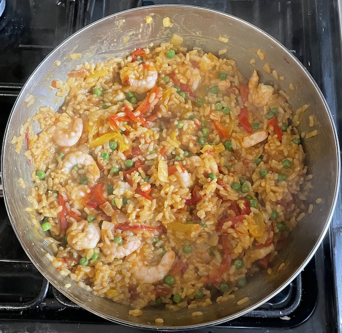
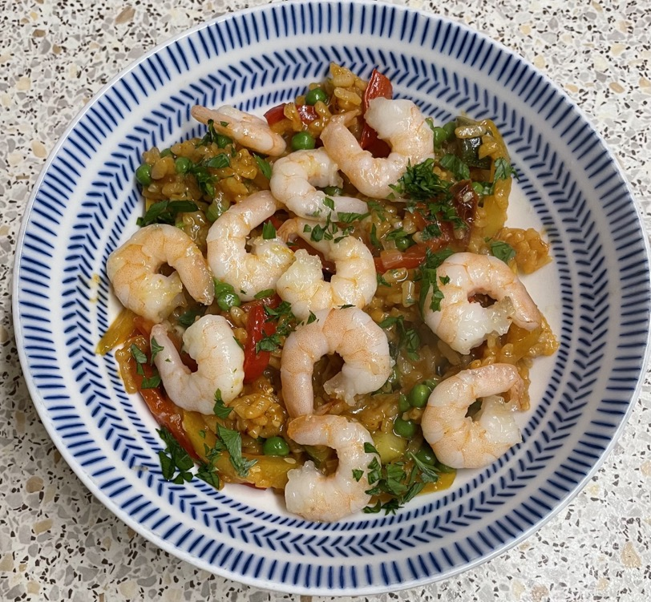

Paella
Sun-dried tomatoes
- Soak for 10 mins
- 25g sun-dried tomatoes
- 50ml water boiled
- Blitz
Paella
- Heat for 10 mins
- olive oil
- 1 onion chopped
- 1 red pepper sliced long
- 1 yellow pepper sliced long
- 1 carrot diced (optional)
- Add and cook for 2 mins
- 3 cloves garlic grated
- Add and mix well
- 250g paella rice
- large pinch saffron
- 1½ tsp sweet smoked paprika
- 1½ tsp paprika
- ¼ tsp mild chilli powder
- Add and simmer for 25 mins till rice is cooked
- 750ml stock (1 salted & 1 unsalted cube)
- sun-dried tomatoes
- Mix in and cook for 5 mins
- 150g peas
- 250g uncooked prawns
- Add
- 2 tsp lemon juice
- parsely chopped
- salt to taste
Serving
- Prawns
- Pan-fried cod
- Chimmichurri Holy Moly mayo
- 4 portions
Notes
- Optional veg: artichokes, courgette
- Optional: chorizo, clams, mussels, cooked seafood mix
Pics

